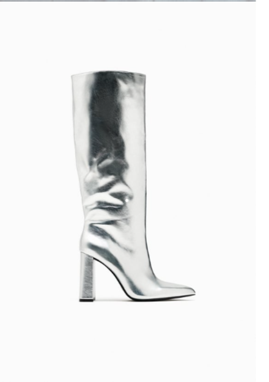

BOTA TACÓN METALIZADA Zapato tipo bota tacón efecto metalizado. Tacón ancho, Cierre mediante cremallera, Acabado en punta. Precio: 45,95 EUR COMPOSICION: CORTE :100% poliuretano FORRO :96% poliéster 4% poliuretano SUELA :100% estireno butadieno estireno PLANTILLA :100% poliéster